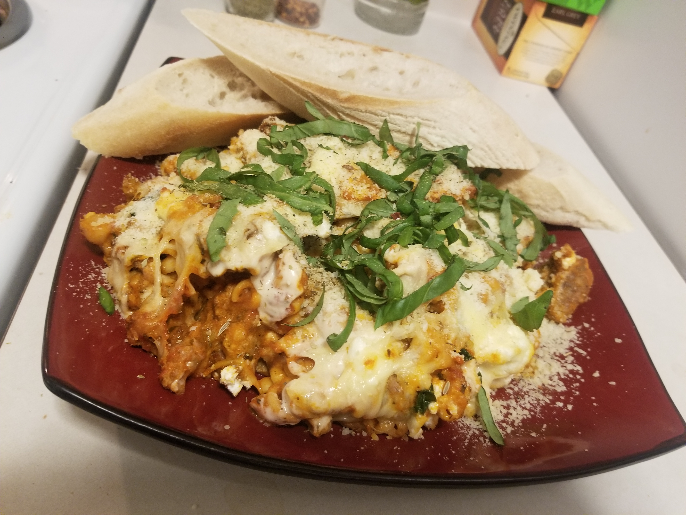

Who doesn't love delicious Italian food? Losers, thats who.
This is one of my favorite dishes to cook. It's super easy and theres always tons of leftovers. Definitely dont make this if you don't like cheese or are lactose intolerant. Most of these ingredients are pretty interchangable. You're adults, do what you want.
Heres what you will need:
- 1 pound of dried pasta, I use penne mostly
- 1 jar of your favorite marinara sauce. I like to use Arrabbiata for some extra spice
- 1 jar of alfredo sauce
- 2 pounds of ground sausage
- Ricotta cheese
- Shredded mozzarella cheese
- About 2 TBSP of minced garlic
- 3 or 4 leafs of fresh basil. I like to use more. Also, julienne that shit up, G
- For extra flavor I add some ground truffle seasoning into the sauce. Maybe a few tsp
How to make:
- Fill a pot with water and add salt until it tastes like seawater then boil
- Preheat oven to 400 deg Fahrenheit
- Brown the ground pork in a seperate pan then reduce heat and continue until its cooked
- Add dried pasta to the water and stir every few minutes until its al-dente. Strain
- In the pot you cooked the pasta in add cooked pasta, ground pork, marinara, alfredo, garlic and truffle seasoning. Stir until its all mixed together and the sauce is an orange-ish color
- In a smaller pot add some of the pasta mixture and add little penny-sized dolops of ricotta over the pasta and mozzarella to top
- Bake in the oven until pasta is hot and cheese is melted. I usually cook it a little longer until the cheese is carmalized on the outside
- Top with basil and a little grated parmesan
- Enjoy!